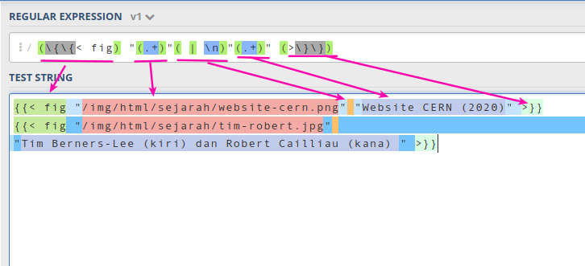

REGULAR EXPRESSION
Regex adalah singkatan dari Regular Expresion. Regex merupakan sebuah teks (string) yang
mendefinisikan sebuah pola pencarian sehingga dapat membantu kita untuk melakukan matching (pencocokan),
locate (pencarian), dan manipulasi teks. Regular expressions biasa juga dikatakan sebagai “bahasa
pemrograman”, dimana kita mengekspresikan beberapa aplikasi penting, seperti aplikasi text-search atau
komponen compiler. Regular expression sangat berhubungan dengan nondeterministic finite automata
dan bisa dikatakan sebagai alternatif “user-friendly” kepada notasi NFA untuk mendeskripsikan komponen
perangkat lunak.
Bagaimanapun, regular expression menawarkan sesuatu yang automata tidak bisa tawarkan, yaitu cara deklaratif
untuk mengekspresikan string yang ingin kita terima. Jadi, regular expression disajikan sebagai
bahasa input untuk berbagai sistem yang memproses string. contohnya termasuk:
- Search commands seperti UNIX grep atau command yang setara untuk mendapatkan string yang terlihat di web browser atau sistem text-formatting. Sistem ini menggunakan regular expression serupa untuk mendeskripsikan pola yang ingin pengguna dapat dalam sebuah file.
- Generator lexical-analyzer, seperti Lex atau Flex. Sebagai pengingat bahwa lexical-analyzer merupakan komponen dari compiler yang memisahkan sumber program menjadi unit logikal (yang disebut tokens) dari satu atau lebih karakter yang memiliki pembagian signifikan. Contoh dari token termasuk kata kunci (keywords), pengidentifikasi (identifier), dan tanda (sign) seperti + atau <=.
OPERATOR REGULAR EXPRESSION
Regular Expressions berarti bahasa. Contoh mudahnya, regular expressions 01* + 10* berarti
bahasa yang terdiri dari semua string yang tidak lain merupakan 0 sendiri yang diikuti oleh angka
1 atau 1 sendiri yang diikuti oleh angka 0. Kita tidak mengharapkan kamu untuk tahu hingga poin ini,
yaitu tentang bagaimana untuk menginterpretasikan regular expressions, jadi pernyataan kita
tentang bahasa dari ekspresi ini musti kita terima sebab takdir untuk saat ini.
Sebelum mendeskripsikan notasi regular expressions, kita harus tahu dan belajar mengenai tiga
operasi dalam bahasa yang ditampilan oleh operator regular expressions. Ketiga operasi tersebut
adalah:
- The union (persatuan) dari dua bahasa The union (persatuan) dari dua bahasa, yaitu L dan M, seperti yang dinotasikan sebagai L ∪ M, yang merupakan set string yang berada pada L atau M, ataupun keduanya. Contohnya, jika L = {001, 10, 111} dan M = {∈, 001}, lalu L ∪ M = {∈, 10, 001, 111}.
- The concatenation (penggabungan) dari bahasa L dan M The concatenation (penggabungan) dari bahasa L dan M yang meruapakan set string yang dapat disusun dari pengambilan string sembarang di L lalu digabungkan dengan string sembarang di M. Kita menotasikan concatenation dengan dot (.) atau tanpa operator apapun juga. Meskipun begitu, operator concatenation sering disebut “dot”.
- The closure (Keene closure) The closure (Keene closure) dari bahasa L yang dinotasikan dengan L* dan menampilkan set dari beberapa string yang bisa disusun berdasarkan pengambilan angka apapaun dari string L, mungkin dengan perulangan lalu semuanya digabungkan.
MANFAAT DAN CONTOH PEMANFAATAN REGEX
Berdasarkan definisi regular expressions sendiri, kita dapat mengetahui tiga manfaat penting dari regular expressions, yaitu pencarian, pencocokan, dan manipulasi teks (string). Berikut ini beberapa contoh pemanfaatan regular expressions dalam pemrograman:
- Regular Expressions Untuk Validasi Data Pemanfaatan regular expressions satu ini sama halnya dengan contoh kasus seperti membuat password, dimana kita diminta harus menggunakan huruf kapital, angka, dan simbol, jika tidak mematuhinya, maka akan diberikan peringatan seperti di bawah ini:
- Regular Expressions untuk Pencarian Contoh penerapan regular expressions untuk pencarian sebenarnya hampir sama dengan validasi data. Pola regular expressions dimasukkan dalam kata kunci, lalu dicocokkan dengan database atau teks. Contoh program yang menerapkan ini ialah grep (globally search for a regular expression and print matching lines) yang dimana biasanya ditemukan di sistem operasi Unix dan Linux, bahkan ini menjadi program yang selalu ada di setiap distro Linux. Program grep melalukan pencarian berdasarkan pola regular expression yang diberikan, lalu mencetak output hasilnya.
- Regular Expression untuk Find and Replace Manfaat yang satu ini sangat memberikan kemudahan bagi penggunanya, bagaimana tidak, sebab fitur ini membantu mengelola teks dan konten dengan lebih efisien. Jika dimisalkan kita memiliki ratusan konten dengan format markdown, lalu di satu kondisi kita ingin mengubah beberapa teks di semua konten, tentu kita akan kewalahan dan menguras banyak waktu dan tenaga sebab harus dilakukan satu-per-satu, tapi karena regular expression, kita bisa lakukan dalam hitungan detik. Cukup dengan membuat pola pencarian dan pola untuk mengubahnya (substitusi).
Pengetahuan program mengenai ketidakpatuhan kita inilah yang merupakan peran regular expressions, program mampu mengenali password yang kita inputkan pada filled berkat regular expressions. Itulah salah satu pemanfaatan regular expressions sebagai matching atau pencocok teks.
Pertama-tama, kita harus mendefinisikan pola regex untuk data yang valid. Kemudian, kita lakukan pencocokan dengan pola tersebut. Contohnya akan saya perlihatkan menggunakan kode HTML berikut ini:

Perhatikan atribut pattern, atribut ini digunakan untuk menyimpan pola regular expressions. Pada contoh di atas, polanya adalah pengecekan karakter yang diinputkan pada password.
Contohnya, semisal kita ingin mencari teks pada syslog, kita bisa melihat ini file syslog dengan cat
Perintah ini akan menampilkan banyak sekali teks. Nah di sini kita bisa memanfaatkan grep untuk mencari teks tertentu pada log. Jika semisal kita ingin tahu apa saja log yang berkaitna dengan jaringan:
Jika diperhatikan, terdapat kata network yang dimana menjadi pola regular expression dan akan menjadi kata kunci pencarian, lalu hasilnya pun seperti di bawah ini:

Grep akan mewarnai hasil teks yang cocok dengan pola regular expression yang diberikan. Hasil tersebut juga dapat memberikan kita clue mengenai log apa saja yang sudah dilakukan pada jaringan komputer kita. Perlu diketahui juga bahwa tidak hanya di grep saja, melainkan pada beberapa teks editor juga menerapkan regular expression untuk pencarian.
Sebagai contoh, jika kita ingin mengubah code di bawah ini:
Sehingga menjadi:
Maka pola pencariannya yaitu:
Dan pola untuk mengubahnya yaitu:
Maka diperoleh hasil seperti berikut:

Pada pola pencarian di atas, kita melakukan pengelompokkan atau grouping sebanyak lima kelompok. Lalu melakukan substitusi atau replace. Gambarannya sebagai berikut:

Referensi
Code Politan: Mengenal Regular Expression
Jago Ngoding: Belajar Regular Expression
Petani Kode: Apa itu Regex? dan Apa Manfaatnya dalam Pemrograman?